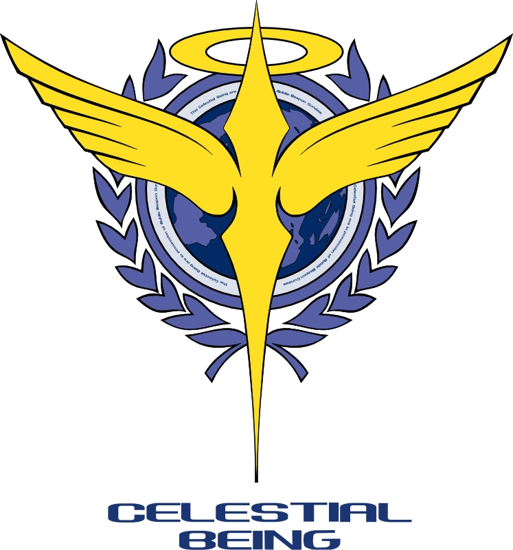

公元2307年，化石燃料几乎消耗殆尽，全球能源分配极度失衡。人类社会依赖由三大跨国势力集团——太阳能与自由国家联盟（联盟）、人类革新联盟（HRL）、先进欧洲联盟（AEU）——掌控的太阳能发电系统。由于能源只惠及这三大集团及其盟友，世界范围内小国为争夺燃料与能源冲突不断，经济依赖化石燃料的国家陷入贫困，甚至有国家因太阳能系统威胁“上帝的应许之地”而引发长达二十年的太阳能战争。
在这动荡的时代，一个名为“天人武装组织”的准军事组织出现。他们拥有四台高度先进的人形机动战士“高达”，以及神秘的“GN驱动装置”技术。天人武装组织以武力介入全球冲突，目标是通过战争彻底消除战争。
联合国部队击败天人武装组织四年后，人类成立了地球联邦，并组建了独立于联邦军、拥有极大自由裁量权的警察部队——A-Laws。A-Laws以“团结”和“世界和平”为名，实则利用权力通过非人道手段压制自由与信仰，镇压抵抗组织和异见分子。
面对A-Laws的暴政，天人武装组织从失败的灰烬中重生，决心铲除A-Laws，恢复真正的和平。他们凭借埃欧利亚·修罕贝克留下的“Trans-Am系统”和“双驱动系统”，并联合抵抗组织“卡塔隆”，与A-Laws展开激烈斗争。然而，双方都未察觉，一个自称“变革者”的神秘势力正暗中操控局势，声称自己才是埃欧利亚计划的真正执行者……